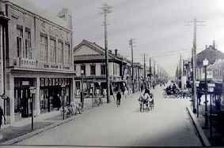

旅游项目
抗美援朝纪念馆传承抗美援朝精神
丹东舰景区
东港大鹿岛
中朝边境
凤城凤凰山
凤城凤凰山
丹东舰景区
景点地图
丹东舰景区
东港大鹿岛
中朝边境
凤城凤凰山
丹东历史悠久，距今1.8万多年前的旧石器时代晚期，就有先民劳动、生息、繁衍在这块土地上。3500—4000年前，这里的先民进入青铜器时代。 丹东地处祖国边陲，历朝都是军事要塞。唐尧时，归青州之域，虞舜属营州。 战国时，为燕国东部边疆。 西汉，设西安平县、武茨县。 唐总章元年（668年），置安东都护府。
辽，建宣州、开州、穆州和来远城，金朝，属婆娑府路（今振安区九连城镇）管辖。 元朝时，沿袭金制置婆娑府。 明朝，隶属辽东都指挥使司。万历四十六年（1618年），后金采取定边政策，在叆河边门和凤凰城边门筑柳条边，禁止在边墙以外地区农牧、渔猎、采伐、采矿，致使丹东地域成为不毛之地，严重破坏经济、文化的发展。 清康熙二十八年（1689年）后，清朝政府实行拓边政策，才逐步得到开发。随着山东、河北等地垦殖的汉民日益增多。处于内外交困的清政府，被迫利用“禁区”富饶的资源“归化流民”，准许熟地升科，到同治十三年（1874年），规定“东边地带全部开禁”。同治十四年（1875年），在鞍子山设置升科纳税。光绪二年（1876年），清政府设置安东县、岫岩州、凤凰厅。翌年，设置宽甸县，并以凤凰厅为首府管辖岫岩、安东、宽甸3个县，至此，结束了边陲自然开发的历史。丹东进入新的开发时期，为丹东市的形成创造有利条件。
辽，建宣州、开州、穆州和来远城，金朝，属婆娑府路（今振安区九连城镇）管辖。 元朝时，沿袭金制置婆娑府。 明朝，隶属辽东都指挥使司。万历四十六年（1618年），后金采取定边政策，在叆河边门和凤凰城边门筑柳条边，禁止在边墙以外地区农牧、渔猎、采伐、采矿，致使丹东地域成为不毛之地，严重破坏经济、文化的发展。 清康熙二十八年（1689年）后，清朝政府实行拓边政策，才逐步得到开发。随着山东、河北等地垦殖的汉民日益增多。处于内外交困的清政府，被迫利用“禁区”富饶的资源“归化流民”，准许熟地升科，到同治十三年（1874年），规定“东边地带全部开禁”。同治十四年（1875年），在鞍子山设置升科纳税。光绪二年（1876年），清政府设置安东县、岫岩州、凤凰厅。翌年，设置宽甸县，并以凤凰厅为首府管辖岫岩、安东、宽甸3个县，至此，结束了边陲自然开发的历史。丹东进入新的开发时期，为丹东市的形成创造有利条件。
民国二年（1913年），设立中国奉天省东路道。 九一八事变第二天，日本军队便侵占安东和凤城。民国二十二年（1933年）12月15日，日伪改辽宁省为奉天省，安东县隶属于奉天省，为甲类县。民国二十三年（1934年）10月，伪满洲国把东北4省划为14省，其中新增设的安东省管辖安东、凤城、赛马、宽甸等12县，治所设于安东县城，安东遂成为安东省军事、政治、经济、文化活动中心。民国二十六年（1937年）12月，伪满洲国设置安东市。安东市从安东县析出，与安东县同隶属于安东省，市区划金汤、元宝、中兴、镇安、浪头、大和、旭日7个区。
抗日战争中，杨靖宇率领东北抗日联军战斗在辽东。 民国三十四年（1945年），抗日战争胜利后，中国共产党领导的军队进驻安东市。11月初，接收日伪政权，成立安东省和安东市、安东县、凤城县、赛马县、宽甸县政府。安东市区划为中央、镇江、中兴、元宝、金汤、镇安、浪头7区。 民国三十五年（1946年）3月，安东县九连城划归安东市。6月，成立辽南省二专署，隶属于辽南省，管辖安东、孤山两县。11月，改属于安东省。民国三十六年（1947年）3月，撤销二专署，安东市、安东县和孤山县均直属于安东省。11月，五龙背区划归安东市。
1949年5月，辽东省成立，安东市隶属于辽东省。安东市是安东省、辽东省省会，为安东省和辽东省政治、经济、文化中心。 1954年9月，辽东、辽西两省合并，设置辽宁省，丹东市隶属辽宁省。 1956年4月，元宝、镇安两区合并为元宝区，镇兴、中央两区合并为镇兴区。7月，又将九连城、五龙背两区合并为五龙背区，浪头、汤池两区合并为浪头区。 1957年7月，撤销浪头、五龙背两区，设市郊区。
1958年12月，将安东、凤城、岫岩、宽甸4县划归安东市，实行市管县体制。 1965年1月，经国务院批准，安东市改名丹东市。意为红色东方之城。安东县改名东沟县。2月，镇兴区改名振兴区。 1965年12月，庄河划归丹东市。 1968年12月，庄河又划归旅大市（今大连市）。
1978年后，在中共十一届三中全会的路线、方针、政策指引下，丹东市人民高举邓小平理论的伟大旗帜，开创了社会主义建设新时期，在社会主义物质文明和精神文明建设中，取得一个又一个光辉成就，使丹东市发生翻天覆地的变化。县区行政机构也发生变化。首先，恢复元宝区的称谓。 1980年10月，郊区改名振安区。 1985年后，岫岩、凤城、宽甸3县先后改为满族自治县。 1992年2月，岫岩满族自治县划归鞍山市。
1993年6月、1994年3月，经国务院批准，先后撤销东沟县建立东港市、撤销凤城满族自治县设立凤城市。至此，丹东市辖振兴区、元宝区、振安区和东港市、凤城市、宽甸满族自治县。并设置国家级丹东边境经济合作区。 1992年，设立国家级经济合作区丹东边境经济合作区，是当时国家14个国家边境经济合作区之一。
{kind=link}